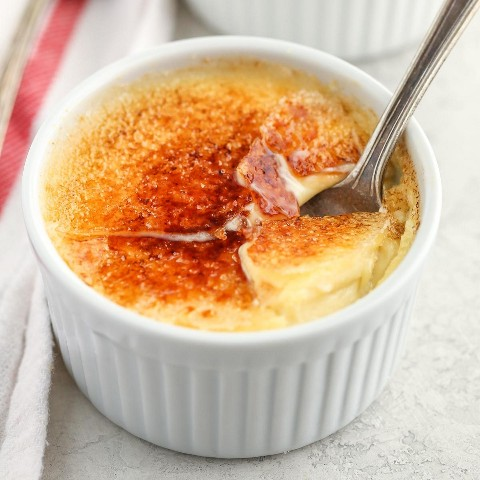
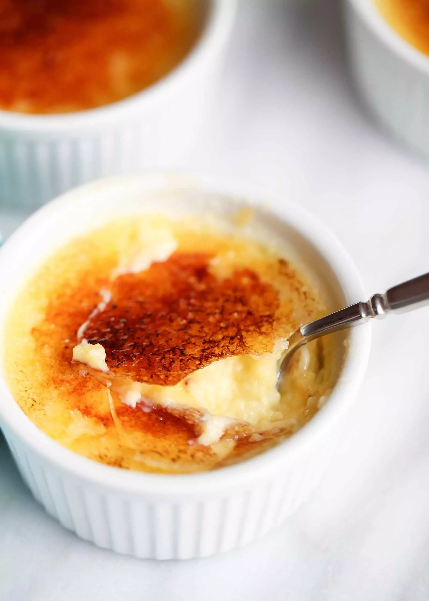
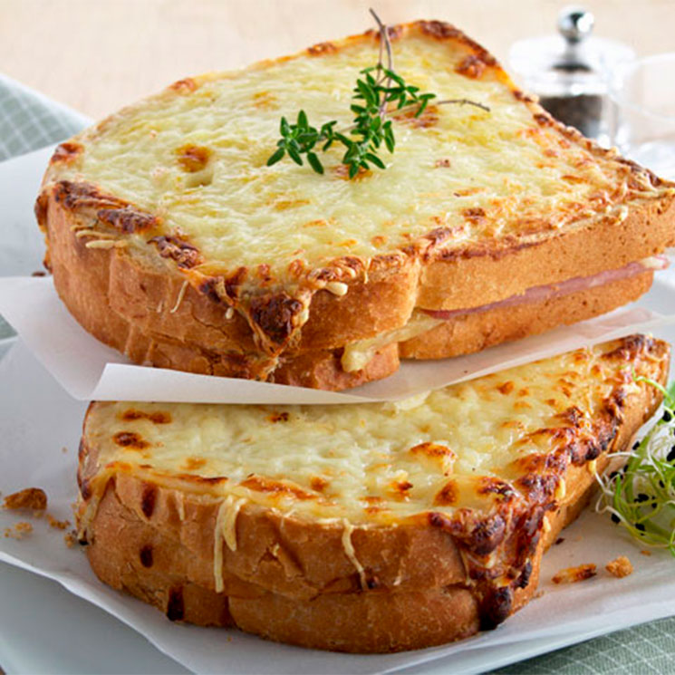
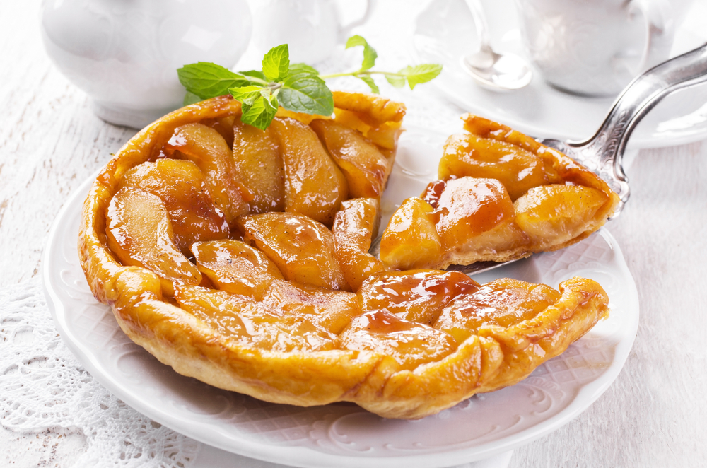
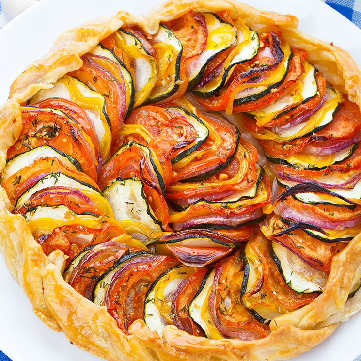
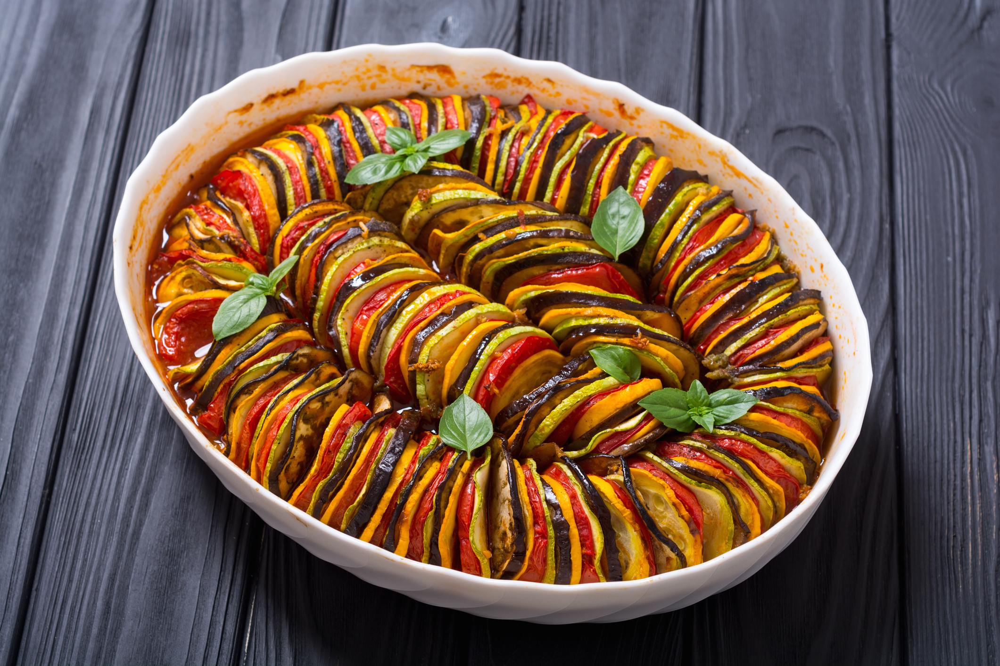
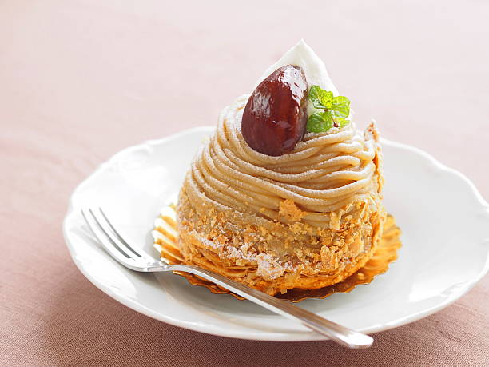
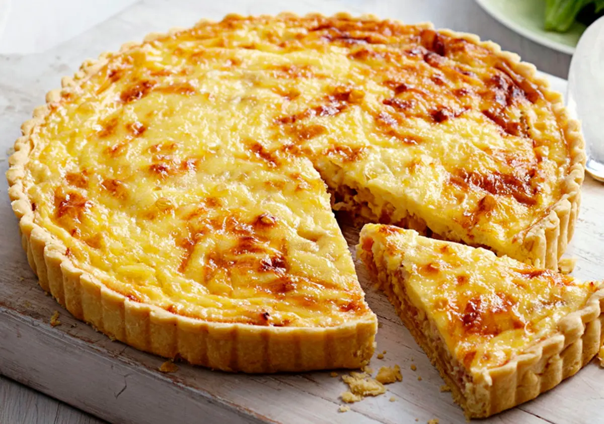
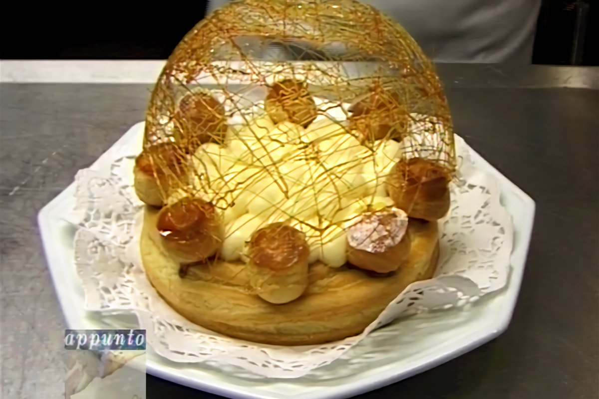
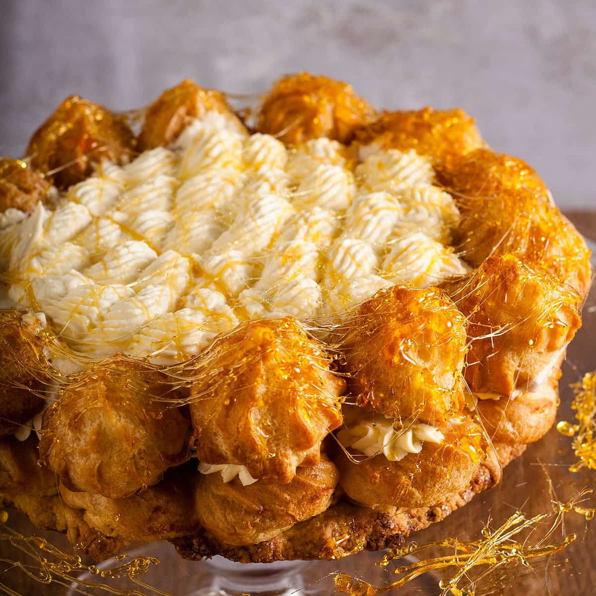

Crème brûlée
Literalmente se traduce como crema quemada

Croque Monsieur
El croque-monsieur es un sándwich elaborado con pan de molde, jamón cocido y queso gratinado

Tarte Tatin
La tarta Tatin es una variante de la tarta de manzana en la que las manzanas han sido caramelizadas


Ratatouille
La ratatouille es una preparación típica de la cocina francesa que consiste en un estofado de diferentes hortalizas típicas del sur de Francia

Mont-Blanc
Un Mont Blanc es un postre hecho de puré de castañas endulzadas y cubierto de nata montada

Quiche Lorraine
Se llama Quiche a los platos que parecen tartas pero son salados, como pueden ser quiche de verduras, bacon, pollo, entre otros ingredientes


Gâteau Saint Honoré
La Saint-Honoré es un pastel que se elabora con profiteroles montados en una base cilíndrica elaborada de pasta choux y nata montada